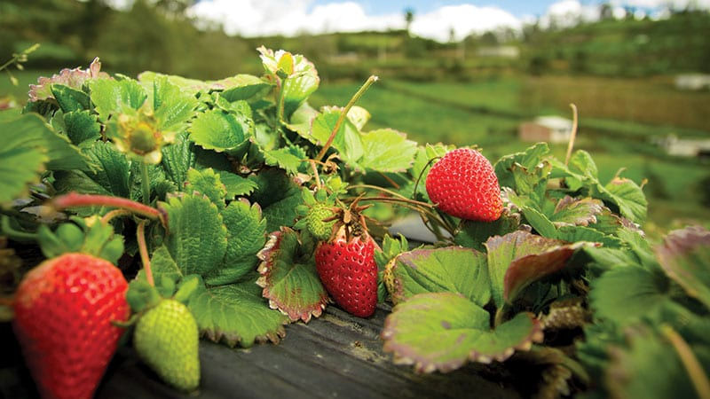

Hi! I recently went to a strawberry farm. I picked a lot of strawberries. I am going to make
strawberry cake when I get home. I think everyone should visit their local strawberry farm!

Over 300 People Visited this Strawberry Farm!
This past weekend many people visited this famous strawberry farm.
🔗 strawberryfields.com